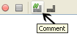
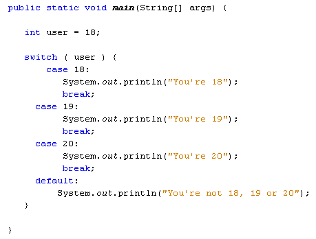
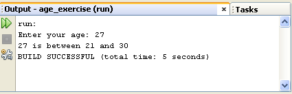
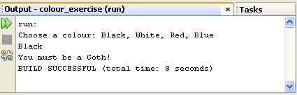

Switch Statements in Java
Another way to control the flow of your programmes is with something called a switch statement. A switch statement gives you the option to test for a range of values for your variables. They can be used instead of long, complex if … else if statements. The structure of the switch statement is this:
switch ( variable_to_test ) {
case value:
code_here;
break;
case value:
code_here;
break;
default:
values_not_caught_above;
}
So you start with the word switch, followed by a pair of round brackets. The variable you want to check goes between the round brackets of switch. You then have a pair of curly brackets. The other parts of the switch statement all go between the two curly brackets. For every value that you want to check, you need the word case. You then have the value you want to check for:
case value:
After case value comes a colon. You then put what you want to happen if the value matches. This is your code that you want executed. The keyword break is needed to break out of each case of the switch statement.
The default value at the end is optional. It can be included if there are other values that can be held in your variable but that you haven't checked for elsewhere in the switch statement.
If all of that is confusing, here's some code to try out. You can either start a new project for this, or just comment out the code you have. A quick way to comment out code in NetBeans is from the toolbar at the top. First, highlight the code you want to comment out. Then click the comment icon:

But here's the code:

The first thing the code does is to set a value to test for. Again, we've set up an integer variable and called it user. We've set the value to 18. The switch statement will check the user variable and see what's in it. It will then go through each of the case statements in turn. When it finds one that matches, it will stop and execute the code for that case. It will then break out of the switch statement.
Try the programme out. Enter various values for the user variable and see what happens.
Sadly, you can't test for a range of values after case, just the one value. So you can't do this:
case (user <= 18):
But you can do this:
case 1: case 2: case 3: case 4:
So the above line tests for a range of values, from 1 to 4. But you have to "spell out" each value. (Notice where all the case and colons are.)
To end this section on conditional logic, try these exercises.
Exercise C
Write a programme that accepts user input from the console. The programme should
take a number and then test for the following age ranges: 0 to 10, 11 to 20,
21 to 30, 30 and over. Display a message in the Output window in the following
format:
user_age + " is between 21 and 30"
So if the user enters 27 as the age, the Output window should be this:

If the user is 30 or over, you can just display the following message:
"You are 30 or over"
Help for this exercise
To get string values from the user, you did this:
String age = user_input.next( );
But the next( ) method is used for strings. The age you are getting from the user has to be an integer, so you can't use next( ). There is, however, a similar method you can use: nextInt( ).
Exercise D
If you want to check if one String is the same as another, you can use a Method
called equals.
String user_name = "Bill";
if ( user_name.equals(
"Bill" ) ) {
//DO SOMETHING HERE
}
In the code above, we've set up a String variable and called it user_name. We've then assigned a value of "Bill" to it. In between the round brackets of IF we have the variable name again, followed by a dot. After the dot comes the word "equals". In between another pair of round brackets you type the string you're trying to test for.
NOTE: When checking if one string is the same as another, they have to match exactly. So "Bill" is different from "bill". The first has an uppercase letter "B" and the second has a lowercase "b".
For this exercise, write a programme that asks a user to choose between four
colours: black, white, red, or blue. Use IF … ELSE IF statements to display
one of the following messages, depending on which colour was chosen:
BLACK "You must be a Goth!"
WHITE "You are a very pure person"
RED "You are fun and outgoing"
BLUE "You're not a Chelsea fan, are you?"
When your programme ends, the Output window should look like something like this:

OK, let's move on and have a look at loops. We'll be upping the pace a bit in this next section, so hang on to your hats!